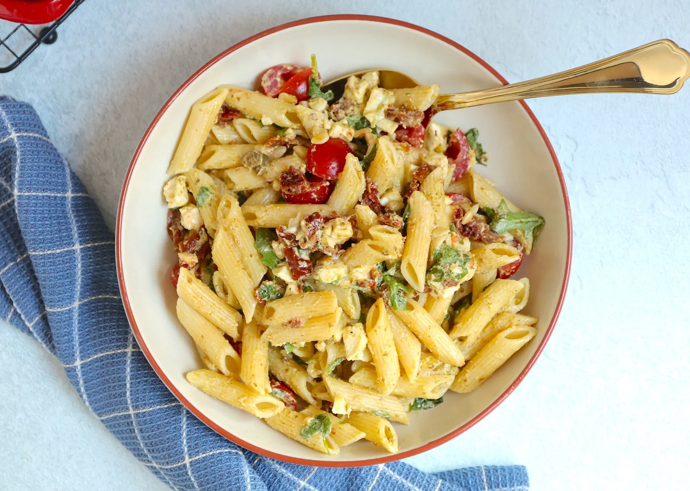

PASTA PESTO SALADE

ingredienten
- 6 witte boterhammen
- 4 plakken bacon
- 12 plakjes kaas
- 1 tomaat
- 1 bosui
- Begin met het voorverwarmen van het tosti ijzer. Snijd de tomaat in plakjes en de bosui in dunne ringetjes.
- Bak de plakjes bacon in een pan zonder olie krokant. Haal de bacon daarna uit de pan en laat even uitlekken op een keukenpapiertje.
- Beleg twee boterhammen met plakjes kaas. Leg hierop een plakje bacon en eventueel wat plakjes tomaat en wat bosui.
- Leg dan een boterham erboven op en leg ook hier plakjes kaas, bacon, bosui en eventueel tomaat op.
- Leg de laatste boterham erboven op (je hebt nu als het goed is twee tosti's van ieder drie boterhammen) en leg de tosti voor ongeveer 5 minuten onder de grill totdat de boterhammen mooi goudbruin gebakken zijn.